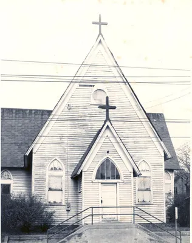

Generations of worship
Baptisms, confirmations, marriages, funerals, music, prayer, and Communion hold personal history within the larger parish story.
A living legacy in Greensboro
From a mission imagined in 1906 to worship, civic witness, and community care today.

The founding story
In 1906, the Episcopal Diocese of North Carolina determined that a mission was needed for Black Episcopalians in Greensboro. William Thomas Wallace Sr., educated at Saint Augustine College, gathered approximately twelve communicants in his home around a vision for a mission growing through ministry, discipleship, fellowship, and evangelism.
In 1909, Archdeacon Clarence Delaney sent authorization to begin the mission. Joseph McDonald, a lay reader from Saint Augustine College, delivered the letter and helped conduct worship. Nine congregants attended the first service in June 1909 in the chapel of the Agricultural and Technical College for the Colored Race, now North Carolina A&T State University.
Services later moved to the Masonic Lodge on South Davie Street. As attendance grew, the congregation purchased land at Market and North Dudley Streets and converted an existing one-room structure into a chapel.
Verified milestones
This timeline is grounded in Redeemer’s published official history. Oral histories and archival research can add depth without replacing the record.
The Diocese identifies the need for a mission serving Black Episcopalians in Greensboro.
Nine congregants worship in the campus chapel after the mission is authorized.
The early church is dismantled and rebuilt for a growing congregation.
The first unit of a new complex, designed by parishioner William Streat, opens for worship.
Redeemer serves as a meeting place for Civil Rights organizers during desegregation.
The completed sanctuary is consecrated and the rectory blessed.
Redeemer receives full parish status at the 163rd Diocesan Convention.
Redeemer is included in Greensboro's African American Civil Rights preservation work, with National Register nomination preparation underway.
Worship, formation, fellowship, preservation, and care carry the legacy forward.
Civil Rights and community witness
Redeemer’s official history records the parish as a meeting place for Civil Rights organizers during Greensboro’s desegregation era. It also describes decades of citywide Ash Wednesday worship celebrating Redeemer’s participation in that movement.
This history should be expanded through church records, oral histories, and carefully sourced civic archives. Any claim about landmark or National Register status remains Needs church confirmation.

Civil Rights preservation
In 2026, the City of Greensboro continued its work to preserve and highlight African American Civil Rights history through a grant-funded preservation initiative supported by the National Park Service's Historic Preservation Fund. As part of that effort, Episcopal Church of the Redeemer was identified as one of the historically significant sites being prepared for nomination to the National Register of Historic Places.
Redeemer also served as the host site for a community meeting on the project, welcoming residents, city and county staff, and preservation leaders into its fellowship hall to discuss the documentation of places and stories connected to Greensboro's Civil Rights Movement.
This moment affirms what generations of Redeemer members have already known: the church is not only a place of worship, but a witness - a sacred home tied to Greensboro's struggle, memory, and ongoing work for justice.
Architecture and sacred space
The 1956 building unit and 1969 sanctuary belong to the congregation’s story of growth, stewardship, and welcome.
Baptisms, confirmations, marriages, funerals, music, prayer, and Communion hold personal history within the larger parish story.
Document architecture, materials, renovation needs, and any formal preservation status only after expert and church review.
Photographs, documents, names, and memories can help future generations understand the life held here.
Help hold the memory
Share a memory, identify someone in a photograph, offer an approximate date, or tell us what Redeemer has meant to your family and Greensboro.
Share a memorySupport the next chapter
The restoration campaign connects history with accessibility, hospitality, worship, and future ministry.
Explore the campaignPrimary source: Episcopal Church of the Redeemer, “Our History.”
People who carried the mission
Redeemer's growth was sustained by clergy and laypeople whose worship, teaching, music, stewardship, and family life formed the congregation.
The Reverend James Satterwhite served as the first vicar. Edwin Fisher led the Sunday School; Marie Byers was the first organist; S. A. Sebastian served as chorister; and Margaret Wallace was the first Episcopal parochial school teacher.
Bishop Joseph Blount Cheshire conducted the mission's first confirmation. Emma Friday Wallace was among those confirmed, and Olive Lucille Wallace was the first baby baptized there.
Jordan J. Greene led the mission from 1928 to 1952, first as a deacon and, after his 1930 ordination, as a priest. The congregation grew, renovated again, and organized a building campaign.
After the earlier church was condemned in 1954, the Reverend J. Howard Thompson secured a $12,500 National Church grant. A new unit designed by parishioner William Streat opened for worship on November 4, 1956.
The Reverend Carlton Owen Morales became vicar in 1966. The completed sanctuary and rectory were blessed in 1969, the Leary Room was dedicated in 1970, and Redeemer achieved parish status in 1979.
From 1980 through 1999, Redeemer renewed its facilities, organized the Servant Center, installed new pews, and became debt-free. Later leaders included interim rector Clifford Coles, the Reverend Wheigar J. Bright, and the Reverend Dr. Alicia Alexis.